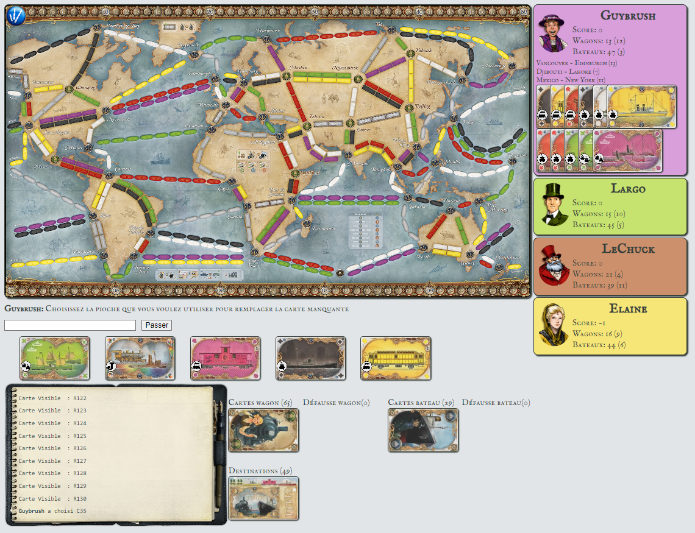

Ce projet a été réalisé lors de ma 1ère année de BUT informatique.
Ce projet qui a duré environ 1 mois, consistait à coder le jeu les aventuriers du rail en java.
Nous étions un groupe de 2 personnes sur ce projet, on devait seulement s'occuper de la partie technique car la
partie graphique était entièrement donné dans ce projet.
Dans ce projet, je me suis occupé de beaucoup de choses comme le début de tour où vous devez choisir vos nombres de pions avec lesquels vous voulez commencez, le nombre de cartes destinations que vous voulez gardez ou bien même la capture de routes et la pioche.
Voici un exemple du jeu.
